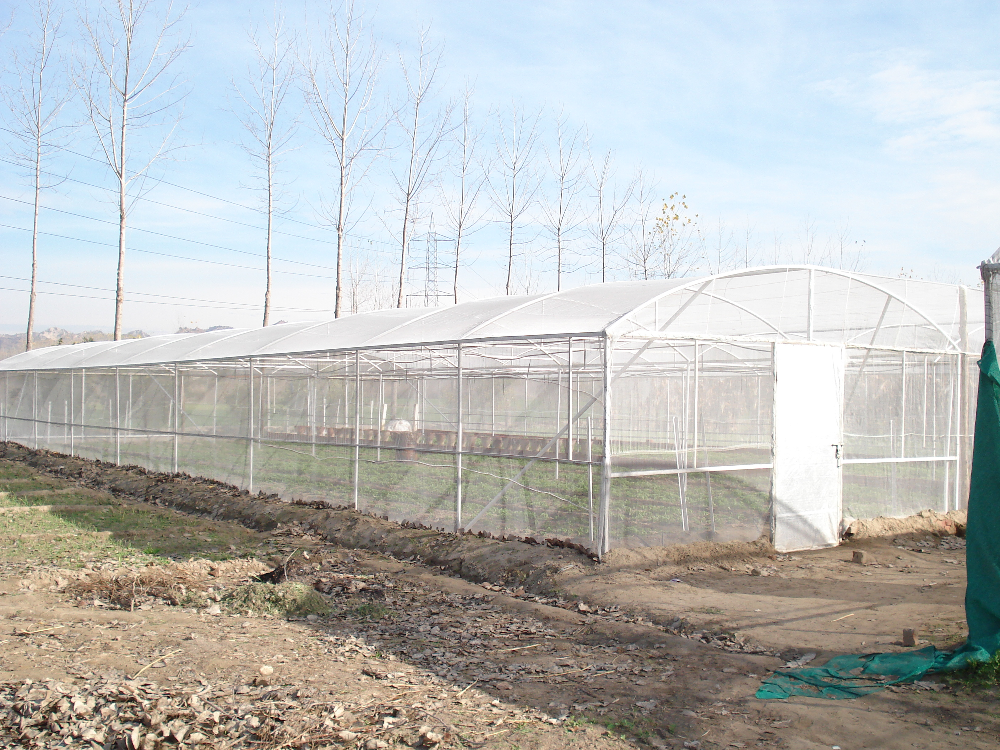
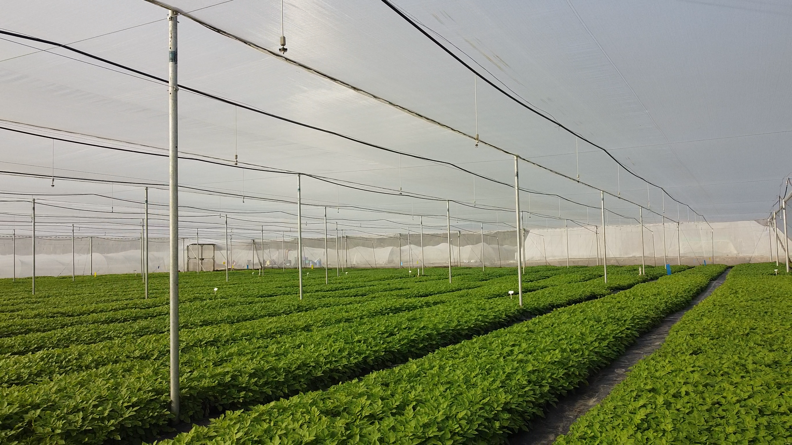
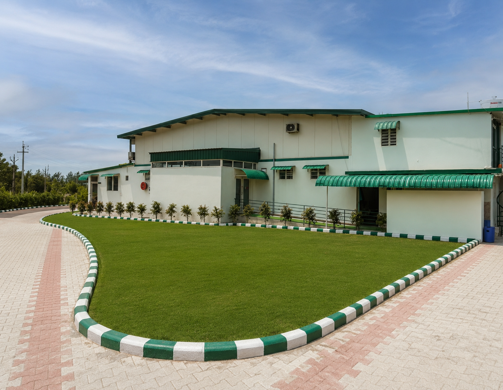
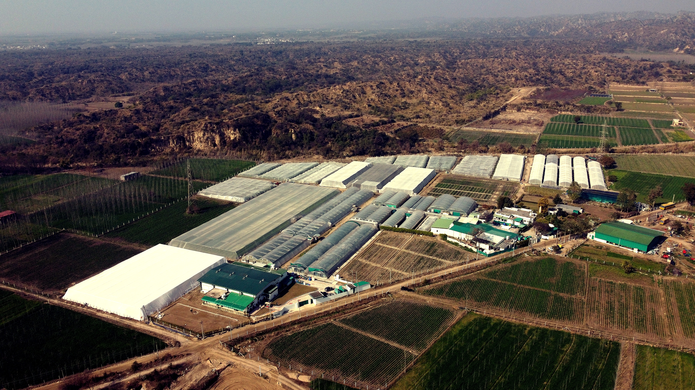

Thirty years ago a family acquired land at the foot of the Shivalik Hills with a simple conviction — that Indian agriculture deserved better inputs. What followed was an unusual journey: from flowers to science, and from science to seed.
The journey began when the Sekhon family acquired agricultural land in the Shivalik foothills of Punjab — one of India's most naturally fertile corridors, shaped by river tributaries and rich alluvial soil.
The goal was not conventional farming. The ambition was to bring a scientific edge to agriculture — to do something that would genuinely move the needle for Indian growers.
The early years, from 1999 to 2007, were spent in floriculture — growing Gladiolus, Gerbera, Carnations and Lilium in net houses on the property. These crops demanded precision, discipline and controlled environments. They were the training ground.
In 2003, a Plant Tissue Culture Laboratory was established on-site — initially to produce cost-effective Oriental Lilium planting material. It was the first time tissue culture had been set up at this scale in the region for a commercial farm.

Early net house infrastructure — the foundation of what would become our seed potato operation.

Every seed potato we produce begins as a single, virus-indexed mother plant in our tissue culture laboratory — the same facility established in 2003, now running ICAR-CPRI Shimla and Department of Biotechnology, Government of India accredited protocols.
Plantlets move from the sterile lab environment into two parallel production pathways: our coco peat greenhouses and CPRI-developed aeroponic chambers. Both converge at the same certified G-0 mini-tuber — the cleanest possible starting point for any seed multiplication chain.
We work with 29 varieties covering table, fries, chips and specialty segments, supplying growers, processors and state seed corporations across India. Every lot is traceable to a single certified mother plant.
See how we do it
Whether you are a commercial grower looking for certified seed, a processor sourcing consistent varieties, or someone who wants to join our team — we would like to hear from you.

© 2026 Sekhon Biotech Pvt. Ltd. All rights reserved.
← Back to home